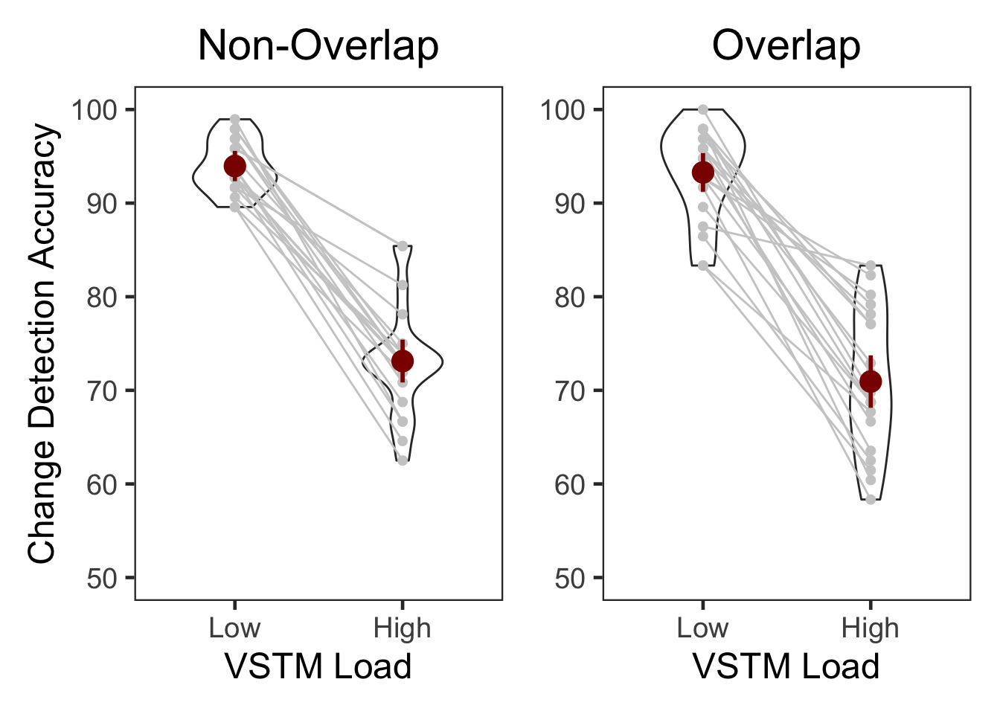
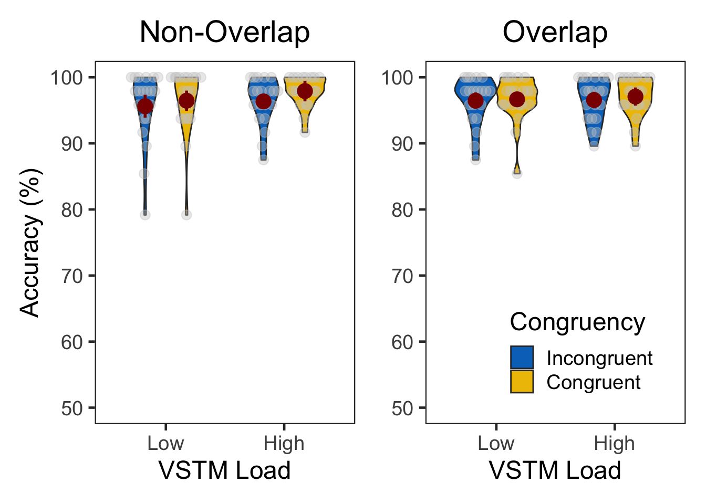
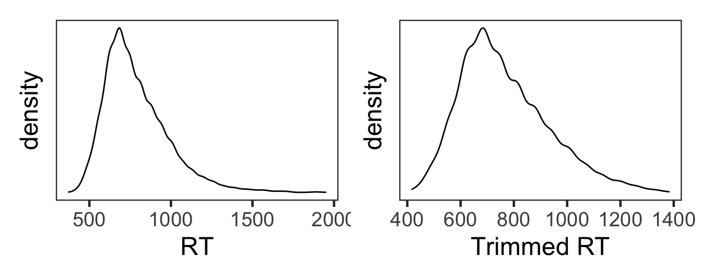
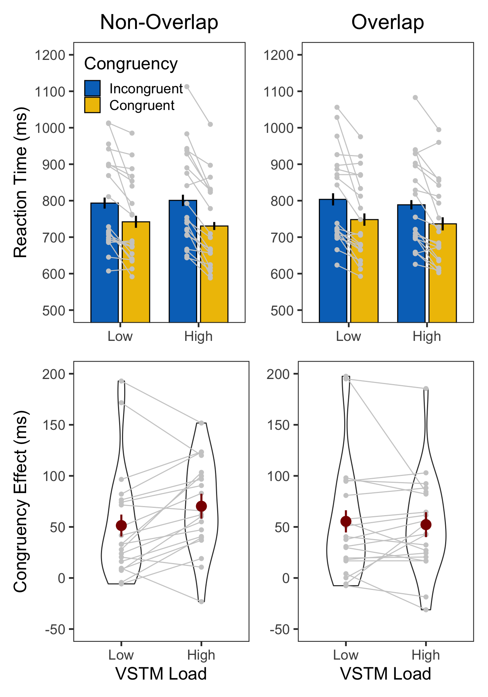

set.seed(12345) # for reproducibility
# Some packages need to be loaded. We use `pacman` as a package manager, which takes care of the other packages.
if (!require("pacman", quietly = TRUE)) install.packages("pacman")
if (!require("Rmisc", quietly = TRUE)) install.packages("Rmisc") # Never load it directly.
pacman::p_load(tidyverse, knitr,
powerAnalysis, afex, emmeans, BayesFactor,
cowplot, ggstatsplot)
pacman::p_load_gh("thomasp85/patchwork", "RLesur/klippy")
options(knitr.kable.NA = '')
options(dplyr.summarise.inform=FALSE) # 200603 supress warning in regards to regrouping
klippy::klippy()A short version of task description here.
E5 <- read.csv("data/data_vstmAS5.csv", header = T)
E5$SN <- factor(E5$SN)
E5$vstmLoad <- factor(E5$vstmLoad, levels=c(1,2), labels=c("LowLoad","HighLoad"))
E5$Congruency <- factor(E5$Congruency, levels=c(0,1), labels=c("Incongruent","Congruent"))
E5$Overlap <- factor(E5$Overlap, levels=c(0,1), labels=c("NonOverlap","Overlap"))
E5$Corr <- ifelse(E5$Targ==E5$Resp,1,0)
E5$vstmCorr <- ifelse(E5$vstmCond==E5$vstmResp,1,0)
# Description of raw data columns.
# 1. SN: participant ID
# 2. Trial: 1~384
# 3. Block: 1~8
# 4. vstmLoad: VSTM load. 1 = low, 2 = high
# 5. Overlap: 0 = Non overlap, 1 = Overlap
# 6. Targ: target type. 1 or 2
# 7. Flnk: flanker type. 1 or 2
# 8. TargPos: target position. 1~6
# 9. FlnkPos: flanker position. 1 or 2
# 10. Congruency: 0 = incongruent, 1 = congruent
# 11. Resp: 1 or 2, 7 = no response
# 12. RT: response time in second
# 13. vstmPos: VSTM sample position. 1 or 2
# 14. vstmCond: change = 1 or not = 2
# 15. vstmResp: 1 or 2, 7 = no response
# 16. vstmRT: response time in second
# 17. Corr: attention task correctness, 1=correct, 0 = incorrect
# 18. vstmCorr: VSTM task correctness, 1=correct, 0 = incorrect
glimpse(E5, width=70)
## Rows: 7,680
## Columns: 18
## $ SN <fct> 1, 1, 1, 1, 1, 1, 1, 1, 1, 1, 1, 1, 1, 1, 1, 1, …
## $ Trial <int> 1, 2, 3, 4, 5, 6, 7, 8, 9, 10, 11, 12, 13, 14, 1…
## $ Block <int> 1, 1, 1, 1, 1, 1, 1, 1, 1, 1, 1, 1, 1, 1, 1, 1, …
## $ vstmLoad <fct> LowLoad, LowLoad, LowLoad, LowLoad, LowLoad, Low…
## $ Overlap <fct> NonOverlap, NonOverlap, Overlap, NonOverlap, Ove…
## $ Targ <int> 2, 2, 2, 2, 2, 1, 1, 2, 1, 1, 2, 2, 2, 1, 1, 2, …
## $ Flnk <int> 2, 2, 1, 1, 2, 2, 2, 1, 2, 2, 2, 2, 2, 1, 2, 1, …
## $ TargPos <int> 2, 4, 6, 3, 5, 5, 3, 2, 2, 1, 6, 5, 4, 6, 3, 2, …
## $ FlnkPos <int> 2, 2, 1, 2, 2, 2, 2, 1, 1, 1, 2, 1, 1, 1, 1, 1, …
## $ Congruency <fct> Congruent, Congruent, Incongruent, Incongruent, …
## $ Resp <int> 2, 2, 2, 1, 2, 1, 1, 2, 1, 2, 2, 2, 2, 1, 1, 2, …
## $ RT <dbl> 0.5173, 0.5137, 0.5021, 0.5597, 0.4749, 0.6083, …
## $ vstmPos <int> 1, 1, 1, 1, 2, 2, 1, 1, 2, 1, 2, 2, 1, 2, 1, 2, …
## $ vstmCond <int> 2, 2, 1, 1, 2, 1, 2, 1, 1, 2, 2, 2, 2, 2, 2, 2, …
## $ vstmResp <int> 2, 2, 1, 2, 2, 1, 2, 1, 1, 2, 2, 2, 2, 2, 2, 2, …
## $ vstmRT <dbl> 0.4370, 0.6895, 0.7419, 1.0432, 0.7147, 0.5920, …
## $ Corr <dbl> 1, 1, 1, 0, 1, 1, 1, 1, 1, 0, 1, 1, 1, 1, 1, 1, …
## $ vstmCorr <dbl> 1, 1, 1, 0, 1, 1, 1, 1, 1, 1, 1, 1, 1, 1, 1, 1, …Spatial overlap, VSTM Load, and congruency were within-subject factors.
| 1 | 2 | 3 | 4 | 5 | 6 | 7 | 8 | 9 | 10 | 11 | 12 | 13 | 14 | 15 | 16 | 17 | 18 | 19 | 20 | |
|---|---|---|---|---|---|---|---|---|---|---|---|---|---|---|---|---|---|---|---|---|
| NonOverlap | 192 | 192 | 192 | 192 | 192 | 192 | 192 | 192 | 192 | 192 | 192 | 192 | 192 | 192 | 192 | 192 | 192 | 192 | 192 | 192 |
| Overlap | 192 | 192 | 192 | 192 | 192 | 192 | 192 | 192 | 192 | 192 | 192 | 192 | 192 | 192 | 192 | 192 | 192 | 192 | 192 | 192 |
| 1 | 2 | 3 | 4 | 5 | 6 | 7 | 8 | 9 | 10 | 11 | 12 | 13 | 14 | 15 | 16 | 17 | 18 | 19 | 20 | |
|---|---|---|---|---|---|---|---|---|---|---|---|---|---|---|---|---|---|---|---|---|
| LowLoad | 192 | 192 | 192 | 192 | 192 | 192 | 192 | 192 | 192 | 192 | 192 | 192 | 192 | 192 | 192 | 192 | 192 | 192 | 192 | 192 |
| HighLoad | 192 | 192 | 192 | 192 | 192 | 192 | 192 | 192 | 192 | 192 | 192 | 192 | 192 | 192 | 192 | 192 | 192 | 192 | 192 | 192 |
| 1 | 2 | 3 | 4 | 5 | 6 | 7 | 8 | 9 | 10 | 11 | 12 | 13 | 14 | 15 | 16 | 17 | 18 | 19 | 20 | |
|---|---|---|---|---|---|---|---|---|---|---|---|---|---|---|---|---|---|---|---|---|
| Incongruent | 192 | 192 | 192 | 192 | 192 | 192 | 192 | 192 | 192 | 192 | 192 | 192 | 192 | 192 | 192 | 192 | 192 | 192 | 192 | 192 |
| Congruent | 192 | 192 | 192 | 192 | 192 | 192 | 192 | 192 | 192 | 192 | 192 | 192 | 192 | 192 | 192 | 192 | 192 | 192 | 192 | 192 |
# VSTM, Experiment 5, subject-level, long format
vE5slong <- E5 %>% group_by(SN, Overlap, vstmLoad) %>%
summarise(vstmCorr = mean(vstmCorr)*100) %>%
ungroup()
# Experiment 5 summary
vE5slong %>% group_by(Overlap, vstmLoad) %>%
summarise(M = mean(vstmCorr), SD = sd(vstmCorr)) %>%
ungroup() %>%
kable()| Overlap | vstmLoad | M | SD |
|---|---|---|---|
| NonOverlap | LowLoad | 93.95833 | 2.799168 |
| NonOverlap | HighLoad | 73.12500 | 6.041856 |
| Overlap | LowLoad | 93.28125 | 4.937879 |
| Overlap | HighLoad | 70.93750 | 7.601500 |
# wide format, needed for geom_segments.
vE5swide <- vE5slong %>% unite("temp", c("Overlap", "vstmLoad")) %>%
spread(key = temp, value = vstmCorr)
# group level, needed for printing & geom_pointrange
# Rmisc must be called indirectly due to incompatibility between plyr and dplyr.
vE5g <- Rmisc::summarySEwithin(data = vE5slong, measurevar = "vstmCorr",
withinvars = c("vstmLoad", "Overlap"), idvar = "SN")
p1 <- ggplot(filter(vE5slong, Overlap=="NonOverlap"), aes(x=vstmLoad, y=vstmCorr)) +
geom_violin(width = 0.5, trim=TRUE) +
geom_point(color="gray80", size=1.8) +
geom_segment(data=vE5swide, aes(x=1, y=NonOverlap_LowLoad, xend=2,
yend=NonOverlap_HighLoad), color="gray80") +
geom_pointrange(filter(vE5g, Overlap=="NonOverlap"), inherit.aes=FALSE,
mapping=aes(x = vstmLoad, y=vstmCorr,
ymin = vstmCorr - ci, ymax = vstmCorr + ci),
colour="darkred", size = 1) +
labs(title = "Non-Overlap", x = "VSTM Load", y = "Change Detection Accuracy") +
scale_x_discrete(labels=c("LowLoad" = "Low", "HighLoad" = "High")) +
coord_cartesian(ylim = c(50, 100), clip = "on") +
theme_bw(base_size = 18) +
theme(panel.grid.major = element_blank(),
panel.grid.minor = element_blank(),
plot.title = element_text(hjust = 0.5))
p2 <- ggplot(filter(vE5slong, Overlap=="Overlap"), aes(x=vstmLoad, y=vstmCorr)) +
geom_violin(width = 0.5, trim=TRUE) +
geom_point(color="gray80", size=1.8) +
geom_segment(data=vE5swide, aes(x=1, y=Overlap_LowLoad, xend=2,
yend=Overlap_HighLoad), color="gray80") +
geom_pointrange(filter(vE5g, Overlap=="Overlap"), inherit.aes=FALSE,
mapping=aes(x = vstmLoad, y=vstmCorr,
ymin = vstmCorr - ci, ymax = vstmCorr + ci),
colour="darkred", size = 1) +
labs(title = "Overlap", x = "VSTM Load", y = "Change Detection Accuracy") +
scale_x_discrete(labels=c("LowLoad" = "Low", "HighLoad" = "High")) +
coord_cartesian(ylim = c(50, 100), clip = "on") +
theme_bw(base_size = 18) +
theme(panel.grid.major = element_blank(),
panel.grid.minor = element_blank(),
axis.title.y = element_blank(),
plot.title = element_text(hjust = 0.5))
p1 + p2
aov_ez(id = "SN", data = vE5slong, dv = "vstmCorr", within = c("vstmLoad","Overlap")) %>%
anova(es = "pes") %>% kable(digits = 4)| num Df | den Df | MSE | F | pes | Pr(>F) | |
|---|---|---|---|---|---|---|
| vstmLoad | 1 | 19 | 32.0517 | 290.8212 | 0.9387 | 0.0000 |
| Overlap | 1 | 19 | 14.5592 | 2.8181 | 0.1292 | 0.1096 |
| vstmLoad:Overlap | 1 | 19 | 21.6578 | 0.5267 | 0.0270 | 0.4769 |
Accuracy in the attention task was generally high. There were no significant effects in the ANOVA.
aE5slong <- E5 %>% group_by(SN, vstmLoad, Overlap, Congruency) %>%
summarise(Accuracy = mean(Corr)*100, N = n()) %>%
ungroup()
aE5slong %>% group_by(Overlap, vstmLoad, Congruency) %>%
summarise(M = mean(Accuracy),
SD = sd(Accuracy)) %>%
ungroup() %>%
kable()| Overlap | vstmLoad | Congruency | M | SD |
|---|---|---|---|---|
| NonOverlap | LowLoad | Incongruent | 95.62500 | 5.528534 |
| NonOverlap | LowLoad | Congruent | 96.45833 | 5.107578 |
| NonOverlap | HighLoad | Incongruent | 96.35417 | 3.568654 |
| NonOverlap | HighLoad | Congruent | 97.91667 | 2.341464 |
| Overlap | LowLoad | Incongruent | 96.45833 | 3.583027 |
| Overlap | LowLoad | Congruent | 96.66667 | 3.472953 |
| Overlap | HighLoad | Incongruent | 96.56250 | 3.260933 |
| Overlap | HighLoad | Congruent | 97.08333 | 2.977130 |
aE5g <- Rmisc::summarySEwithin(data = aE5slong, measurevar = "Accuracy",
withinvars = c("vstmLoad", "Overlap", "Congruency"), idvar = "SN")
w1 <- ggplot(data=filter(aE5slong, Overlap=="NonOverlap"), aes(x=vstmLoad, y=Accuracy, fill=Congruency)) +
geom_violin(width = 0.7, trim=TRUE) +
ggbeeswarm::geom_quasirandom(dodge.width = 0.7, color = "gray80", size = 3, alpha = 0.4,
show.legend = FALSE) +
geom_pointrange(data=filter(aE5g, Overlap=="NonOverlap"),
aes(x = vstmLoad, ymin = Accuracy-ci, ymax = Accuracy+ci, color = Congruency),
position = position_dodge(0.7), color = "darkred", size = 1, show.legend = FALSE) +
coord_cartesian(ylim = c(50, 100), clip = "on") +
labs(title = "Non-Overlap",
x = "VSTM Load",
y = "Accuracy (%)",
fill="Congruency") +
scale_x_discrete(labels=c("LowLoad" = "Low", "HighLoad" = "High")) +
scale_fill_manual(values=c('#0073C2FF','#EFC000FF'),
labels=c("Incongruent", "Congruent")) +
theme_bw(base_size = 18) +
theme(legend.position = "none",
panel.grid.major = element_blank(),
panel.grid.minor = element_blank(),
plot.title = element_text(hjust = 0.5))
w2 <- ggplot(data=filter(aE5slong, Overlap=="Overlap"), aes(x=vstmLoad, y=Accuracy, fill=Congruency)) +
geom_violin(width = 0.7, trim=TRUE) +
ggbeeswarm::geom_quasirandom(dodge.width = 0.7, color = "gray80", size = 3, alpha = 0.4,
show.legend = FALSE) +
geom_pointrange(data=filter(aE5g, Overlap=="Overlap"),
aes(x = vstmLoad, ymin = Accuracy-ci, ymax = Accuracy+ci, color = Congruency),
position = position_dodge(0.7), color = "darkred", size = 1, show.legend = FALSE) +
coord_cartesian(ylim = c(50, 100), clip = "on") +
labs(title = "Overlap",
x = "VSTM Load",
y = "Accuracy (%)",
fill="Congruency") +
scale_x_discrete(labels=c("LowLoad" = "Low", "HighLoad" = "High")) +
scale_fill_manual(values=c('#0073C2FF','#EFC000FF'),
labels=c("Incongruent", "Congruent")) +
theme_bw(base_size = 18) +
theme(panel.grid.major = element_blank(),
panel.grid.minor = element_blank(),
axis.title.y = element_blank(),
plot.title = element_text(hjust = 0.5),
legend.position = c(.6, .2))
w1 + w2
aov_ez(id = "SN", data = aE5slong, dv = "Accuracy", within = c("vstmLoad", "Overlap", "Congruency")) %>%
anova(es = "pes") %>% kable(digits = 4)| num Df | den Df | MSE | F | pes | Pr(>F) | |
|---|---|---|---|---|---|---|
| vstmLoad | 1 | 19 | 12.5697 | 1.4589 | 0.0713 | 0.2419 |
| Overlap | 1 | 19 | 8.0295 | 0.0541 | 0.0028 | 0.8186 |
| Congruency | 1 | 19 | 8.5949 | 2.8405 | 0.1301 | 0.1083 |
| vstmLoad:Overlap | 1 | 19 | 7.1158 | 0.9759 | 0.0489 | 0.3356 |
| vstmLoad:Congruency | 1 | 19 | 4.8257 | 0.5621 | 0.0287 | 0.4626 |
| Overlap:Congruency | 1 | 19 | 7.5726 | 0.9170 | 0.0460 | 0.3503 |
| vstmLoad:Overlap:Congruency | 1 | 19 | 10.3139 | 0.0421 | 0.0022 | 0.8396 |
# filtering out incorrect trials
cE5 <- E5 %>% filter(Corr==1 & vstmCorr==1) %>% mutate(RT = RT*1000)
# trimming by 2.5 MAD.
rE5 <- cE5 %>% filter(RT > 200) %>%
group_by(SN) %>%
nest() %>%
mutate(lbound = map(data, ~median(.$RT)-2.5*mad(.$RT)),
ubound = map(data, ~median(.$RT)+2.5*mad(.$RT))) %>%
unnest(c(lbound, ubound)) %>%
unnest(data) %>%
mutate(Outlier = (RT < lbound)|(RT > ubound)) %>%
filter(Outlier == FALSE) %>%
ungroup %>%
select(SN, Overlap, vstmLoad, Congruency, RT, vstmRT)
# percentage trimmed.
(nrow(cE5)-nrow(rE5))/nrow(cE5)## [1] 0.052827745.28%의 가외치가 제거되었다.
den1 <- ggplot(cE5, aes(x=RT)) +
geom_density() +
theme_bw(base_size = 18) +
theme(panel.grid.major = element_blank(),
panel.grid.minor = element_blank(),
axis.text.y = element_blank(),
axis.ticks.y = element_blank())
den2 <- ggplot(rE5, aes(x=RT)) +
geom_density() +
theme_bw(base_size = 18) +
labs(x = "Trimmed RT") +
theme(panel.grid.major = element_blank(),
panel.grid.minor = element_blank(),
axis.text.y = element_blank(),
axis.ticks.y = element_blank())
den1 + den2
# Attention RT, Experiment 5, subject-level, long format
rE5slong <- rE5 %>% group_by(SN, Overlap, vstmLoad, Congruency) %>%
summarise(RT = mean(RT)) %>%
ungroup()
# Experiment 5 summary
rE5slong %>% group_by(Overlap, vstmLoad, Congruency) %>%
summarise(M = mean(RT), SD = sd(RT)) %>%
ungroup() %>%
kable()| Overlap | vstmLoad | Congruency | M | SD |
|---|---|---|---|---|
| NonOverlap | LowLoad | Incongruent | 793.4689 | 128.8495 |
| NonOverlap | LowLoad | Congruent | 742.1141 | 115.8197 |
| NonOverlap | HighLoad | Incongruent | 800.8967 | 130.9744 |
| NonOverlap | HighLoad | Congruent | 730.6178 | 118.4081 |
| Overlap | LowLoad | Incongruent | 803.6655 | 127.3437 |
| Overlap | LowLoad | Congruent | 748.2151 | 114.6193 |
| Overlap | HighLoad | Incongruent | 788.7499 | 126.5239 |
| Overlap | HighLoad | Congruent | 736.5275 | 118.4352 |
# wide format, needed for geom_segments.
rE5swide <- rE5slong %>%
unite("temp", c("vstmLoad", "Congruency")) %>%
spread(key = temp, value = RT)
# group level, needed for printing & geom_pointrange
rE5g <- Rmisc::summarySEwithin(data = rE5slong, measurevar = "RT",
withinvars = c("vstmLoad", "Overlap", "Congruency"), idvar = "SN") # Four conditions summary long format
rE5CEslong <- rE5slong %>%
spread(key = Congruency, value = RT) %>%
mutate(cEffect = Incongruent - Congruent) %>%
select(SN, Overlap, vstmLoad, cEffect)
rE5CEslong %>% group_by(Overlap, vstmLoad) %>%
summarise(M = mean(cEffect), SD = sd(cEffect)) %>%
ungroup() %>%
kable()| Overlap | vstmLoad | M | SD |
|---|---|---|---|
| NonOverlap | LowLoad | 51.35488 | 53.88963 |
| NonOverlap | HighLoad | 70.27890 | 44.01042 |
| Overlap | LowLoad | 55.45039 | 58.34648 |
| Overlap | HighLoad | 52.22236 | 47.50604 |
rE5CEswide <- rE5CEslong %>%
unite("temp", c("Overlap", "vstmLoad")) %>%
spread(key = temp, value = cEffect)
rE5CEg <- Rmisc::summarySEwithin(data = rE5CEslong, measurevar = "cEffect",
withinvars = c("Overlap", "vstmLoad"), idvar = "SN") # Eight conditions
r1 <- ggplot() +
geom_bar(data=filter(rE5g, Overlap=="NonOverlap"), aes(x=vstmLoad, y=RT, fill=Congruency),
stat="identity", width=0.7, color="black", position=position_dodge(.8)) +
geom_linerange(data=filter(rE5g, Overlap=="NonOverlap"),
aes(x=vstmLoad, ymin=RT-ci, ymax=RT+ci, group=Congruency),
size=1, position=position_dodge(0.8)) +
scale_fill_manual(values=c('#0073C2FF','#EFC000FF'),
labels=c("Incongruent", "Congruent")) +
geom_point(data=filter(rE5slong, Overlap=="NonOverlap"),
aes(x=vstmLoad, y=RT, group=Congruency),
position=position_dodge(0.6), color="gray80", size=1.8) +
geom_segment(data=filter(rE5swide, Overlap=="NonOverlap"),
aes(x=1-.15, y=filter(rE5swide, Overlap=="NonOverlap")$LowLoad_Incongruent,
xend=1+.15, yend=filter(rE5swide, Overlap=="NonOverlap")$LowLoad_Congruent),
color="gray80") +
geom_segment(data=filter(rE5swide, Overlap=="NonOverlap"),
aes(x=2-.15, y=filter(rE5swide, Overlap=="NonOverlap")$HighLoad_Incongruent,
xend=2+.15, yend=filter(rE5swide, Overlap=="NonOverlap")$HighLoad_Congruent),
color="gray80") +
labs(title = "Non-Overlap", x = "VSTM Load", y = "Reaction Time (ms)") +
scale_x_discrete(labels=c("LowLoad" = "Low", "HighLoad" = "High")) +
coord_cartesian(ylim = c(500, 1200), clip = "on") +
scale_y_continuous(breaks=c(500,600,700,800,900,1000,1100,1200)) +
theme_bw(base_size = 18) +
theme(panel.grid.major = element_blank(),
panel.grid.minor = element_blank(),
plot.title = element_text(hjust = 0.5),
legend.background = element_blank(),
legend.position = c(.35, .85),
axis.title.x = element_blank())
r2 <- ggplot() +
geom_bar(data=filter(rE5g, Overlap=="Overlap"), aes(x=vstmLoad, y=RT, fill=Congruency),
stat="identity", width=0.7, color="black", position=position_dodge(.8)) +
geom_linerange(data=filter(rE5g, Overlap=="Overlap"),
aes(x=vstmLoad, ymin=RT-ci, ymax=RT+ci, group=Congruency),
size=1, position=position_dodge(0.8)) +
scale_fill_manual(values=c('#0073C2FF','#EFC000FF'),
labels=c("Incongruent", "Congruent")) +
geom_point(data=filter(rE5slong, Overlap=="Overlap"),
aes(x=vstmLoad, y=RT, group=Congruency),
position=position_dodge(0.6), color="gray80", size=1.8) +
geom_segment(data=filter(rE5swide, Overlap=="Overlap"),
aes(x=1-.15, y=filter(rE5swide, Overlap=="Overlap")$LowLoad_Incongruent,
xend=1+.15, yend=filter(rE5swide, Overlap=="Overlap")$LowLoad_Congruent),
color="gray80") +
geom_segment(data=filter(rE5swide, Overlap=="Overlap"),
aes(x=2-.15, y=filter(rE5swide, Overlap=="Overlap")$HighLoad_Incongruent,
xend=2+.15, yend=filter(rE5swide, Overlap=="Overlap")$HighLoad_Congruent),
color="gray80") +
labs(title = "Overlap", x = "VSTM Load", y = "Reaction Time (ms)") +
scale_x_discrete(labels=c("LowLoad" = "Low", "HighLoad" = "High")) +
coord_cartesian(ylim = c(500, 1200), clip = "on") +
scale_y_continuous(breaks=c(500,600,700,800,900,1000,1100,1200)) +
theme_bw(base_size = 18) +
theme(legend.position="none",
panel.grid.major = element_blank(),
panel.grid.minor = element_blank(),
axis.title.x = element_blank(),
axis.title.y = element_blank(),
plot.title = element_text(hjust = 0.5))
z1 <- ggplot(filter(rE5CEslong, Overlap=="NonOverlap"), aes(x=vstmLoad, y=cEffect)) +
geom_violin(width = 0.5, trim=TRUE) +
geom_point(color="gray80", size=1.8) +
geom_segment(data=rE5CEswide,
aes(x=1, y=NonOverlap_LowLoad, xend=2,
yend=NonOverlap_HighLoad), color="gray80") +
geom_pointrange(filter(rE5CEg, Overlap=="NonOverlap"), inherit.aes=FALSE,
mapping=aes(x = vstmLoad, y=cEffect,
ymin = cEffect - ci, ymax = cEffect + ci),
colour="darkred", size = 1) +
labs(x = "VSTM Load", y = "Congruency Effect (ms)") +
scale_x_discrete(labels=c("LowLoad" = "Low", "HighLoad" = "High")) +
coord_cartesian(ylim = c(-50, 200), clip = "on") +
theme_bw(base_size = 18) +
theme(panel.grid.major = element_blank(),
panel.grid.minor = element_blank())
z2 <- ggplot(filter(rE5CEslong, Overlap=="Overlap"), aes(x=vstmLoad, y=cEffect)) +
geom_violin(width = 0.5, trim=TRUE) +
geom_point(color="gray80", size=1.8) +
geom_segment(data=rE5CEswide,
aes(x=1, y=Overlap_LowLoad, xend=2,
yend=Overlap_HighLoad), color="gray80") +
geom_pointrange(filter(rE5CEg, Overlap=="Overlap"), inherit.aes=FALSE,
mapping=aes(x = vstmLoad, y=cEffect,
ymin = cEffect - ci, ymax = cEffect + ci),
colour="darkred", size = 1) +
labs(x = "VSTM Load", y = "Congruency Effect (ms)") +
scale_x_discrete(labels=c("LowLoad" = "Low", "HighLoad" = "High")) +
coord_cartesian(ylim = c(-50, 200), clip = "on") +
theme_bw(base_size = 18) +
theme(panel.grid.major = element_blank(),
panel.grid.minor = element_blank(),
axis.title.y = element_blank())
(r1 | r2) / (z1 | z2)
rt8con.aov <- aov_ez(id = "SN", data = rE5, dv = "RT", within = c("Overlap", "vstmLoad", "Congruency"))
rt8con.aov %>% anova(es = "pes") %>% kable(digits = 4)| num Df | den Df | MSE | F | pes | Pr(>F) | |
|---|---|---|---|---|---|---|
| Overlap | 1 | 19 | 210.8361 | 1.2001 | 0.0594 | 0.2870 |
| vstmLoad | 1 | 19 | 1907.6465 | 1.2329 | 0.0609 | 0.2807 |
| Congruency | 1 | 19 | 4342.4430 | 30.2718 | 0.6144 | 0.0000 |
| Overlap:vstmLoad | 1 | 19 | 261.8909 | 4.8475 | 0.2033 | 0.0402 |
| Overlap:Congruency | 1 | 19 | 349.2718 | 1.3951 | 0.0684 | 0.2521 |
| vstmLoad:Congruency | 1 | 19 | 413.9496 | 1.4879 | 0.0726 | 0.2375 |
| Overlap:vstmLoad:Congruency | 1 | 19 | 145.4081 | 8.4368 | 0.3075 | 0.0091 |
rt4con.aov <- aov_ez(id = "SN", data = rE5CEslong, dv = "cEffect", within = c("Overlap", "vstmLoad"))
rt4con.aov %>% anova(es = "pes") %>% kable(digits = 4)| num Df | den Df | MSE | F | pes | Pr(>F) | |
|---|---|---|---|---|---|---|
| Overlap | 1 | 19 | 698.5437 | 1.3951 | 0.0684 | 0.2521 |
| vstmLoad | 1 | 19 | 827.8992 | 1.4879 | 0.0726 | 0.2375 |
| Overlap:vstmLoad | 1 | 19 | 290.8161 | 8.4368 | 0.3075 | 0.0091 |
sessionInfo()
## R version 4.0.2 (2020-06-22)
## Platform: x86_64-apple-darwin17.0 (64-bit)
## Running under: macOS High Sierra 10.13.6
##
## Matrix products: default
## BLAS: /Library/Frameworks/R.framework/Versions/4.0/Resources/lib/libRblas.dylib
## LAPACK: /Library/Frameworks/R.framework/Versions/4.0/Resources/lib/libRlapack.dylib
##
## locale:
## [1] en_US.UTF-8/en_US.UTF-8/en_US.UTF-8/C/en_US.UTF-8/en_US.UTF-8
##
## attached base packages:
## [1] stats graphics grDevices utils datasets methods base
##
## other attached packages:
## [1] klippy_0.0.0.9500 patchwork_1.0.1 ggstatsplot_0.6.0
## [4] cowplot_1.1.0 BayesFactor_0.9.12-4.2 coda_0.19-3
## [7] emmeans_1.5.1 afex_0.28-0 lme4_1.1-23
## [10] Matrix_1.2-18 powerAnalysis_0.2.1 knitr_1.29
## [13] forcats_0.5.0 stringr_1.4.0 dplyr_1.0.2
## [16] purrr_0.3.4 readr_1.3.1 tidyr_1.1.2
## [19] tibble_3.0.3 ggplot2_3.3.2 tidyverse_1.3.0
## [22] Rmisc_1.5 plyr_1.8.6 lattice_0.20-41
## [25] pacman_0.5.1
##
## loaded via a namespace (and not attached):
## [1] utf8_1.1.4 tidyselect_1.1.0
## [3] grid_4.0.2 dunn.test_1.3.5
## [5] gmp_0.6-0 munsell_0.5.0
## [7] codetools_0.2-16 effectsize_0.3.3
## [9] statmod_1.4.34 miniUI_0.1.1.1
## [11] withr_2.2.0 Brobdingnag_1.2-6
## [13] metaBMA_0.6.3 colorspace_1.4-1
## [15] highr_0.8 rstudioapi_0.11
## [17] stats4_4.0.2 DescTools_0.99.38
## [19] ipmisc_3.2.0 rcompanion_2.3.25
## [21] ggsignif_0.6.0 labeling_0.3
## [23] rstan_2.21.2 bbmle_1.0.23.1
## [25] farver_2.0.3 bridgesampling_1.0-0
## [27] vctrs_0.3.4 generics_0.0.2
## [29] TH.data_1.0-10 tidyBF_0.3.0
## [31] metafor_2.4-0 xfun_0.17
## [33] BWStest_0.2.2 R6_2.4.1
## [35] ggbeeswarm_0.6.0 reshape_0.8.8
## [37] logspline_2.1.16 assertthat_0.2.1
## [39] promises_1.1.1 scales_1.1.1
## [41] multcomp_1.4-13 beeswarm_0.2.3
## [43] ggExtra_0.9 gtable_0.3.0
## [45] multcompView_0.1-8 processx_3.4.4
## [47] lmom_2.8 sandwich_2.5-1
## [49] rlang_0.4.7 MatrixModels_0.4-1
## [51] EMT_1.1 zeallot_0.1.0
## [53] PMCMRplus_1.5.0 splines_4.0.2
## [55] TMB_1.7.18 broom_0.7.0.9001
## [57] inline_0.3.16 yaml_2.2.1
## [59] reshape2_1.4.4 abind_1.4-5
## [61] modelr_0.1.8 backports_1.1.10
## [63] httpuv_1.5.4 tools_4.0.2
## [65] ellipsis_0.3.1 WRS2_1.1-0
## [67] ez_4.4-0 Rcpp_1.0.5.2
## [69] ps_1.3.4 prettyunits_1.1.1
## [71] pbapply_1.4-3 correlation_0.3.0
## [73] zoo_1.8-8 LaplacesDemon_16.1.4
## [75] haven_2.3.1 ggrepel_0.8.2
## [77] fs_1.5.0 magrittr_1.5
## [79] magick_2.4.0 data.table_1.13.0
## [81] openxlsx_4.2.2 lmerTest_3.1-2
## [83] lmtest_0.9-38 reprex_0.3.0
## [85] mvtnorm_1.1-1 broomExtra_4.0.6
## [87] matrixStats_0.56.0 hms_0.5.3
## [89] mime_0.9 evaluate_0.14
## [91] xtable_1.8-4 rio_0.5.16
## [93] pairwiseComparisons_2.0.1 broom.mixed_0.2.6
## [95] readxl_1.3.1 gridExtra_2.3
## [97] rstantools_2.1.1 bdsmatrix_1.3-4
## [99] compiler_4.0.2 V8_3.2.0
## [101] crayon_1.3.4 minqa_1.2.4
## [103] StanHeaders_2.21.0-6 htmltools_0.5.0
## [105] mgcv_1.8-33 mc2d_0.1-18
## [107] later_1.1.0.1 libcoin_1.0-6
## [109] expm_0.999-5 Exact_2.0
## [111] RcppParallel_5.0.2 lubridate_1.7.9
## [113] DBI_1.1.0 SuppDists_1.1-9.5
## [115] kSamples_1.2-9 dbplyr_1.4.4
## [117] MASS_7.3-53 boot_1.3-25
## [119] car_3.0-9 cli_2.0.2
## [121] parallel_4.0.2 insight_0.9.6
## [123] pkgconfig_2.0.3 metaplus_0.7-11
## [125] statsExpressions_0.5.0 coin_1.3-1
## [127] numDeriv_2016.8-1.1 foreign_0.8-80
## [129] xml2_1.3.2 paletteer_1.2.0
## [131] vipor_0.4.5 ggcorrplot_0.1.3
## [133] estimability_1.3 rvest_0.3.6
## [135] callr_3.4.4 digest_0.6.25
## [137] parameters_0.8.5 fastGHQuad_1.0
## [139] rmarkdown_2.3 cellranger_1.1.0
## [141] nortest_1.0-4 gld_2.6.2
## [143] curl_4.3 modeltools_0.2-23
## [145] shiny_1.5.0 gtools_3.8.2
## [147] nloptr_1.2.2.2 lifecycle_0.2.0
## [149] nlme_3.1-149 jsonlite_1.7.1
## [151] carData_3.0-4 fansi_0.4.1
## [153] pillar_1.4.6 loo_2.3.1
## [155] fastmap_1.0.1 httr_1.4.2
## [157] pkgbuild_1.1.0 survival_3.2-3
## [159] glue_1.4.2 bayestestR_0.7.2
## [161] zip_2.1.1 class_7.3-17
## [163] stringi_1.5.3 performance_0.5.0
## [165] rematch2_2.1.2 blob_1.2.1
## [167] memoise_1.1.0 Rmpfr_0.8-1
## [169] e1071_1.7-3